🏜️ 带爸妈的美西之旅
2026.7.31 – 8.9 · 纽约出发 · 3人 · 轻松观景为主（不徒步、少爬山、9点起床）
7/31 周五 ✈️纽约 → 旧金山湾区（约6.5h直飞）
8/1–8/2 周末Berkeley AI峰会（已定）· 爸妈倒时差/轻松逛
8/3–8/8 · 6天自驾主行程（本页重点）
8/8晚 或 8/9 ✈️从环线终点城市直飞回纽约
💡 2026年新政策，先看这条：从2026年起，11个热门国家公园对非美国居民收 每人 $100 附加费（16岁以上）。优胜美地在名单上（方案E散买合计$265，买一张 $250 非居民版年票反而省，持卡人+同车3名成人全覆盖）；死亡谷、火山湖、雷尼尔、红杉都不在名单（方案D合计仅~$62，年票不用买）。另外：2026年 Yosemite、死亡谷、火山湖、Mt. Rainier 全部无需预约入园，直接开进去即可。
🗺️ 先看地图：两个方案在哪里
示意图（非精确比例）。两条路线都从Berkeley出发、全程零国内航班，但方向完全相反：方案E一路向东南——翻过内华达山、穿过地球最热的死亡谷、收尾在赌城（拉斯维加斯直飞回纽约）；方案D一路向北——沿太平洋经红杉巨树、火山湖开到西雅图（西雅图直飞回纽约），沿途串了树洞、缆车、快艇、明轮船、蒸汽火车一串体验（小绿点）。
方案E：优胜美地+莫诺湖+死亡谷+赌城（一路向东南）
方案D：火山纵贯线 SF→西雅图（一路向北）
◦ 小绿点 = D沿途体验：树洞/缆车/快艇/明轮船/蒸汽火车/三文鱼
⚖️ 两大终选方案对比：E（东南线）vs D（北上线）
🏆 决赛圈：E 和 D 都是好答案，选哪个看两个问题
问题一：爸妈更想看「热烈的地质奇观」还是「清凉的山林」？E 是反差流——花岗岩巨壁、外星湖、地球最热盐漠、赌城霓虹，情绪浓度高，且带回一句可以讲一辈子的「我们8月去过死亡谷」；D 是舒适流——红杉、火山湖、雪山野花，全程15-28°C，每天还有小火车/快艇这类节目。问题二：爸爸愿意开多少？E 只有13h（最轻方案，8/7还能整天不开车），D 要21h。怕热选D、怕开车选E；两案都是零国内航班、零公园预约。唯一硬约束：选E必须接受死亡谷的「车边观景」纪律（行程已把谷底活动全排在早晚），且现在就抢优胜美地谷内住宿。
📅 逐日行程（点标签切换）
方案E ★经典加州+死亡谷+赌城
方案D ★火山纵贯线
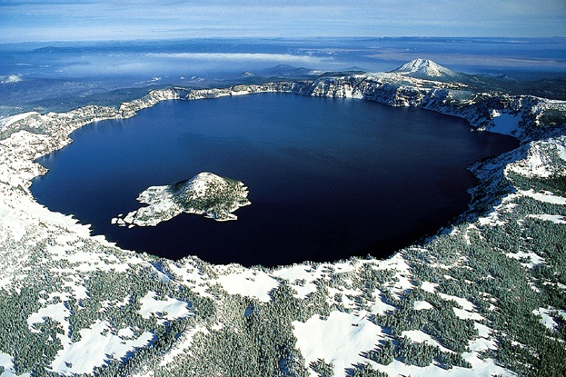
火山湖 Crater Lake
✅ 零国内航班 · 3个国家公园顺路零回头 · 每天一个「非看景」节目：树洞→缆车→快艇→火山湖→明轮船→蒸汽火车→三文鱼。⚠️ 总车程约21h最长；需提前订：Hellgate快艇晚餐游、蒸汽小火车班次、7/23抢Multnomah $2停车许可；8月留意俄勒冈山火AQI。
圆圈数字 = 第几晚的过夜地，对应下方日卡编号 ①–⑥；虚线 = 顺路小支线
8/3 周一 · Berkeley → 巨人大道红杉隧道🚗 4h+0.5h ｜ 宿 Eureka / Trinidad
路线US-101 北上，Leggett 树洞后接巨人大道
住宿Eureka 更方便，Trinidad 海边更有度假感
车程约4.5小时，Willits 适合中途休息
提醒海边早晚有雾，外套放车上
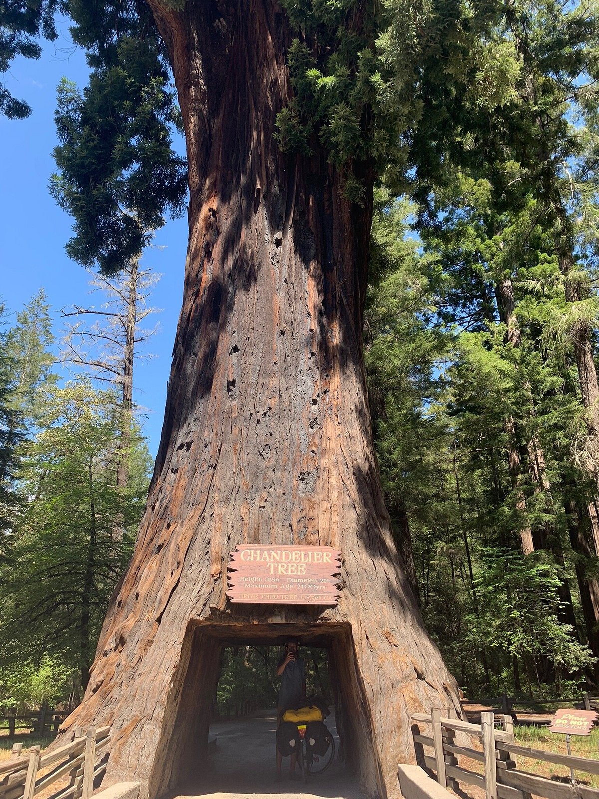
Leggett：Chandelier Tree 开车穿树洞
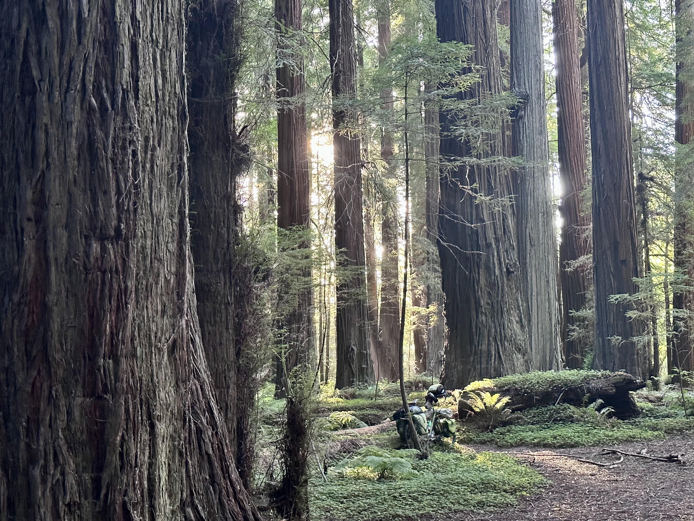
Avenue of the Giants：巨人大道红杉隧道
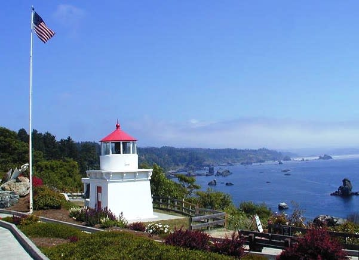
Trinidad 海岸：灯塔小镇/海边日落
09:30
🚗 US-101 北上（约3h到Leggett）出发前确认租车合同为「西雅图还车」单程价；中途 Willits 休息
12:30
🌳 开车穿树洞：Leggett 的 Chandelier Tree——汽车从活着的红杉树洞里开过去（~$15/车）就在101路边，拍照+小卖部午餐，30-40min
14:30
Avenue of the Giants 巨人大道——50km老公路穿行在百米高红杉之间车就开在树的隧道里，随停随拍；Founders Grove 平路环线走10-20min（世界最高树种就在头顶）
16:30
🚗 → Eureka/Trinidad（1h），海边小镇入住Trinidad 灯塔小渔村更美，海鲜晚餐
👟 步行：≤1.5km平路🌡️ 海岸 15-20°C，早晚有雾要外套⏳ 无
8/4 周二 · 红杉国家公园 → 树冠缆车 → 峡谷快艇晚餐🚗 1h+2.5h ｜ 宿 Grants Pass
路线海岸红杉段 + US-199 溪谷公路
住宿Grants Pass，方便接 Hellgate 晚餐船
车程约3.5小时，下午17:00前到镇上
预订Hellgate 快艇晚餐游需提前锁票
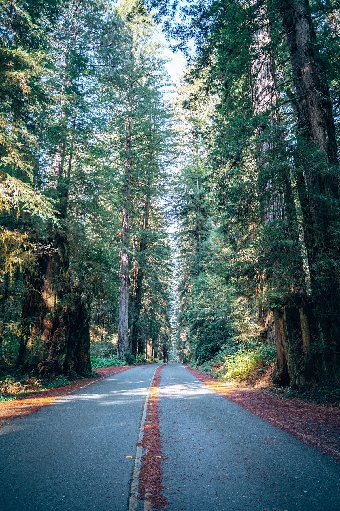
Redwood NP：Big Tree / Newton Drury 公路
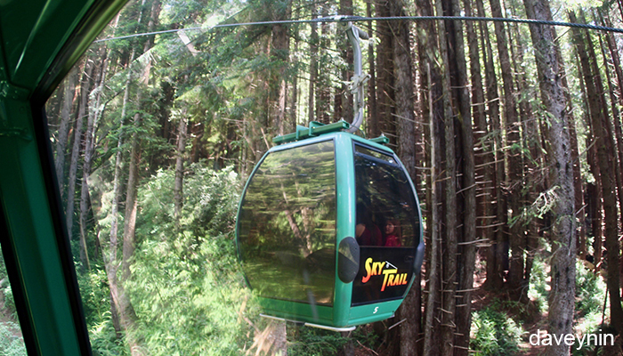
Trees of Mystery：红杉树冠缆车
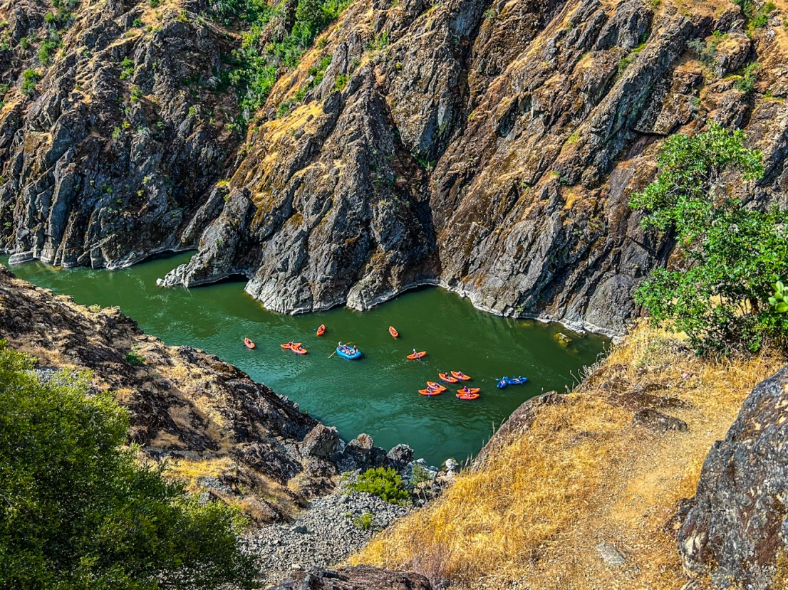
Hellgate Canyon：Rogue 河快艇晚餐游
09:30
🚗 北上 Redwood 国家公园段（1h）
10:30
Big Tree Wayside（停车走200m看巨树）+ Newton Drury 景观公路穿老熟林想多看一点：Lady Bird Johnson Grove 平缓环线2.2km，可走可不走
12:00
🚡 红杉树冠缆车：Klamath 的 Trees of Mystery，SkyTrail 缆车升到树冠层俯瞰红杉海零体力，~$30/人；园内简餐或 Crescent City 午餐
14:30
🚗 US-199 红杉峡谷公路 → Grants Pass（2.5h）US-199 本身就是一条红杉+溪谷景观路；17:00前到即可
17:30
🚤 Hellgate 峡谷快艇晚餐游（约4h，$83/人，需提前订）坐着不动穿 Rogue 河 Hellgate 峡谷+河畔庄园自助晚餐，温和不刺激，爸妈最爱款；订不到就改2h观光版($58)+镇上晚餐
👟 步行：≤2.5km，全平🌡️ 内陆升到28-32°C，船上凉快⏳ 快艇需预订
8/5 周三 · 火山湖环湖 → 波特兰（最重的一天）🚗 2h+4h ｜ 宿波特兰
路线上午上火山湖，下午 I-5 北上波特兰
住宿波特兰市区，晚餐和补给选择多
车程约6小时，是 D 方案最重的一天
提醒湖区海拔高，早晚温差大
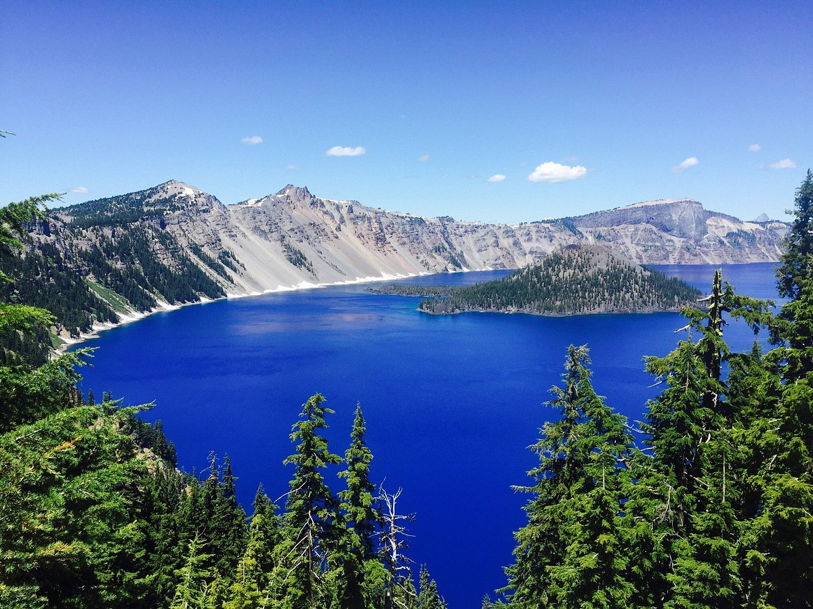
Crater Lake：Rim Village 第一眼火山湖
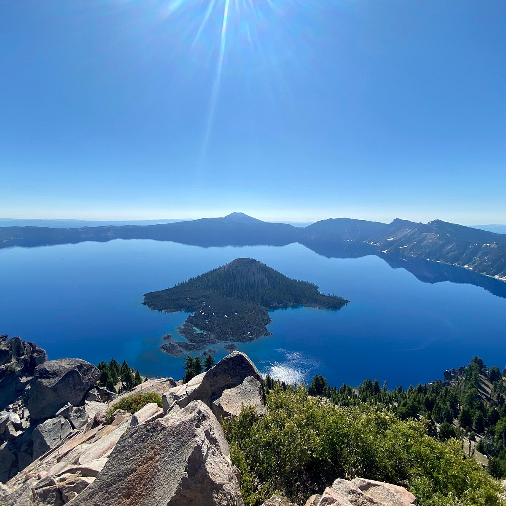
Watchman Overlook：巫师岛视角
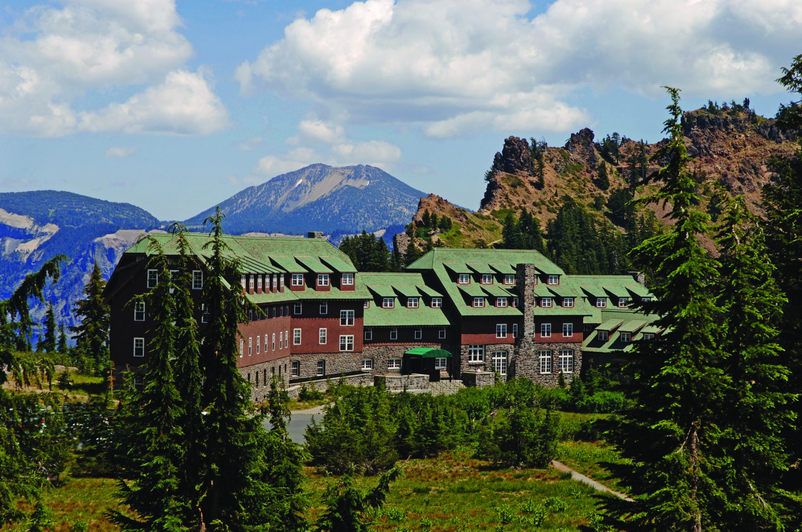
Crater Lake Lodge：湖畔百年老屋
09:00
🚗 从 Grants Pass 上山进火山湖国家公园（2h，$30/车）今天出发稍早，值得
10:30
Rim Village 第一眼火山口湖——直径10km、594m深、蓝得发黑观景台就在停车场边；沿西环湖公路停 Discovery Point、Watchman Overlook（看巫师岛最佳）
12:30
湖畔百年老屋 Crater Lake Lodge 午餐（窗外就是湖）2026年湖岸步道施工、无游船——本来也不适合爸妈走，环湖观景台全开放不受影响
14:00
🚗 → 波特兰（4h，I-5一路高速）全程最长一段车，中途 Eugene 休息加油；爸妈车上补觉
18:30
入住波特兰市区，晚餐（美食车公园/Powell's书店随意逛）
👟 步行：观景台级🌡️ 湖区海拔2100m，24/8°C⏳ 无预约；正午Rim Village停车稍紧
8/6 周四 · 大瀑布+明轮船 → 雷尼尔山脚 · 傍晚上天堂🚗 0.5h+2.5h+0.7h ｜ 宿 Ashford
路线哥伦比亚河谷看瀑布，再北上雷尼尔山脚
住宿Ashford 木屋/旅馆，第二天上山最顺
车程约3.7小时，不含明轮船时间
预订Multnomah I-84 停车许可 + 明轮船班次

Multnomah Falls：两级大瀑布
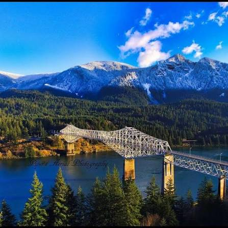
Cascade Locks：哥伦比亚河峡谷明轮船
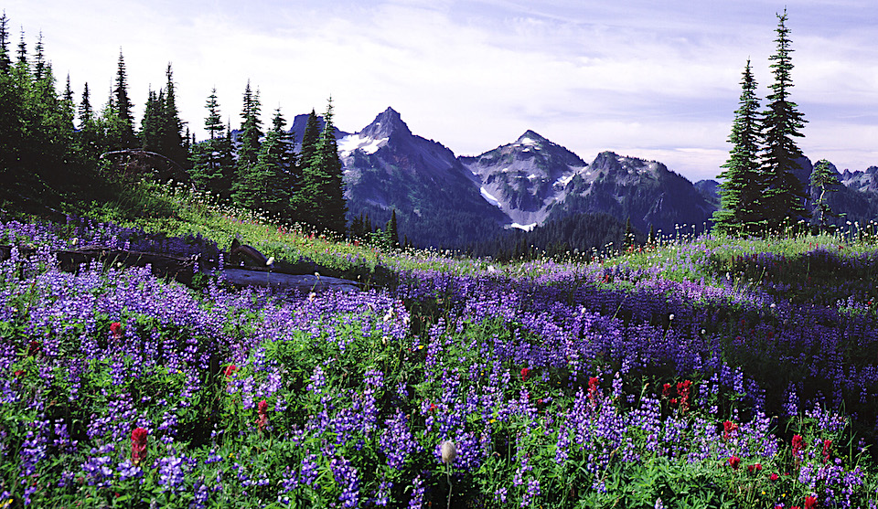
Mt. Rainier Paradise：傍晚雪山野花
09:30
🚗 I-84 东行30min Multnomah 瀑布——189m两级大瀑布，停车场对面即是⏳ 9:00-18:00使用I-84停车场需$2定时许可：7/23早7点PT（纽约早10点）在recreation.gov抢8/6的9:00-10:00时段，两天前有第二波放票走到观瀑桥仅300m缓坡；8-10点人最少
11:30
⛴️ 百年明轮船游峡谷（可选）：往东20min到 Cascade Locks 码头，Sternwheeler 明轮船1-2h哥伦比亚峡谷巡游坐着看两岸千米崖壁+瀑布群；订午间班次可在船上/码头午餐。若当天没有合适班次，改停 Vista House 观景台后直接北上，把时间留给傍晚的雪山
13:30
🚗 北上华盛顿州 → Ashford（2.5h），入住木屋旅馆
17:00
🚗 上 Paradise（40min，$30/车，2026无需预约）傍晚的野花草甸+金色雪山此时停车场空、光线最好、旱獭出没——比周末白天体验好一个档次；8月日落约20:30，时间很够
👟 步行：瀑布300m+草甸随意🌡️ 山上 17/8°C 带外套⏳ 瀑布$2许可
8/7 周五 · 蒸汽小火车 → 天堂野花 → 西雅图🚂 2h + 🚗 0.7h+2.5h ｜ 宿西雅图市区
路线Elbe 小火车后再上 Paradise，下山进西雅图
住宿西雅图市区，方便晚餐和次日船闸
车程约3.2小时，另加小火车约2小时
预订小火车不是每天开，先确认 8/7 班次
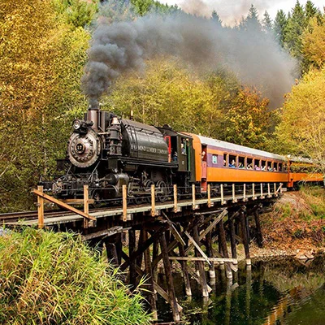
Elbe：雷尼尔蒸汽小火车

Paradise：Myrtle Falls + 野花草甸
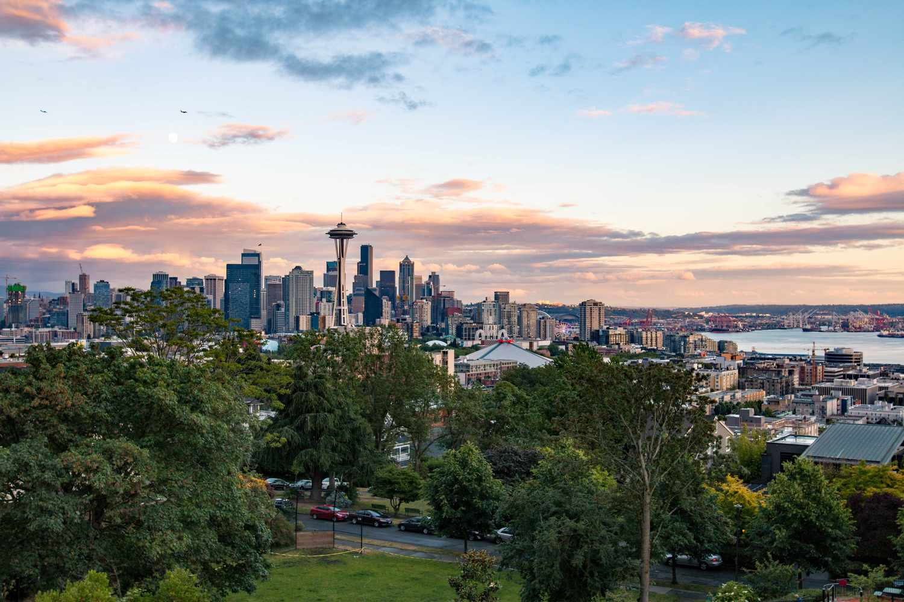
Kerry Park：西雅图天际线+雷尼尔山
09:30
🚂 雷尼尔蒸汽小火车：Ashford 旁的 Elbe 小镇出发，Elbe–Mineral 往返约2h只在部分日子开行，订票时先确认8/7有无班次（1925年Porter No.5蒸汽机车2026年复活首秀）若当日无班次：直接上山，把 Paradise 逛得更慢
13:00
上 Paradise：Myrtle Falls 缓坡步道（往返1.2km，雪山倒影机位）+ 野花草甸8月初野花顶峰；下山顺停 Reflection Lakes 倒影湖、Narada Falls（均停车即达）
18:30
入住市区；Kerry Park 观景台——雷尼尔雪山+天际线同框（白天刚亲近过的雪山此刻在城市背后）；Waterfront 海鲜晚餐
👟 步行：≤1.5km缓坡🌡️ 山上17°C / 西雅图25°C⏳ 小火车看班次
8/8 周六 · 三文鱼洄游+西雅图半日 → 回纽约✈️ SEA→JFK 约5.5h
路线市区半日，最后去 SEA 机场还车
航班SEA → JFK 约5.5小时，尽量选白天/傍晚
车程市内移动为主，机场预留堵车时间
提醒还车时核对异地还车费和油量
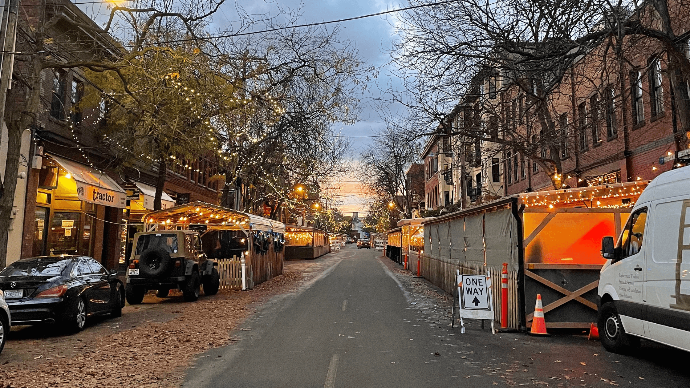
Ballard 船闸：三文鱼鱼梯
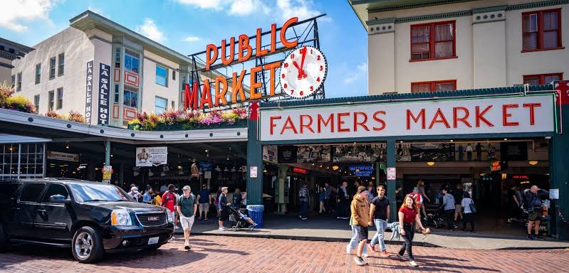
Pike Place Market：飞鱼摊/午餐
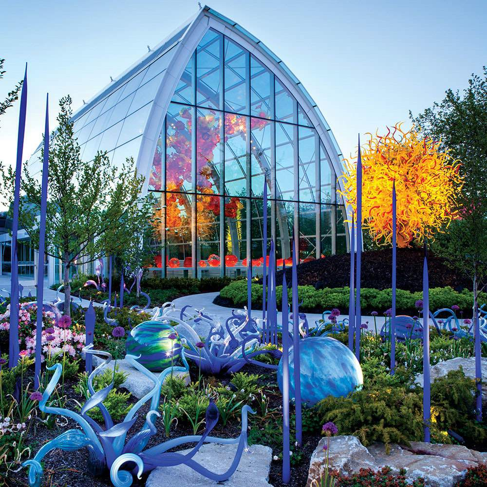
Chihuly Garden and Glass：室内玻璃艺术
10:00
🐟 Ballard 船闸看三文鱼洄游——8月正是红鲑高峰免费、全平地：看船过闸+玻璃观察窗里成群三文鱼爬鱼梯，爸妈一般都看呆
11:30
派克市场（飞鱼摊、第一家星巴克）午餐 + Chihuly 玻璃艺术园（室内）
16:30
✈️ 直飞纽约（约5.5h，落地约凌晨1点）💡 爸妈不爱坐飞机→选白天这班而不是红眼：能看雪山和落基山日景，落地就回家睡。或改8/9早班机再多玩半天
👟 步行：城市闲逛🌡️ 25°C⏳ 安检预留2h
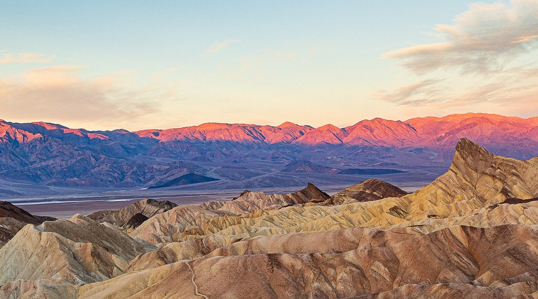
死亡谷 Zabriskie Point
✅ 零国内航班 · 总车程仅约13h · 四种地貌反差拉满：花岗岩巨壁→高山湖→地球最热盐漠→赌城霓虹 · 8/6一天内完成「最高观景点→北美最低点→赌城」。⚠️ 死亡谷8月46-49°C，全部景点执行「车→观景台5-15分钟→回车」纪律；优胜美地8月瀑布基本干涸。
圆圈数字 = 第几晚的过夜地，对应下方日卡编号 ①–⑥
① 8/3 周一 · Berkeley → 优胜美地谷🚗 4h ｜ 宿谷内 / El Portal
路线I-580 接 CA-120 进山，先到 Tunnel View
住宿首选 Yosemite Valley Lodge，订不到选 El Portal
车程约4小时，午后大门可能排队
提醒优胜美地谷内住宿是 E 方案最紧急预订项
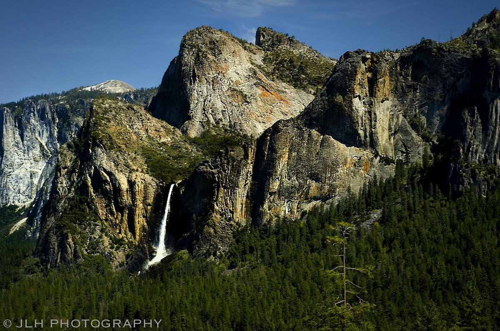
Bridalveil Fall：8月水量较小
09:30
🚗 I-580→CA-120 进山（3.5-4h含休息）Oakdale 午餐；2026年无需预约，但周一午后大门仍可能排20-40min
14:30
Tunnel View 隧道观景点——半圆顶+酋长岩全景明信片机位（停车即达）
15:30
谷底漫游：El Capitan 草坪仰望酋长岩 + Bridalveil 步道（往返800m平路，8月水量小）
18:00
入住 Yosemite Valley Lodge（全行程最难订，现在就订）或谷外 El Portal
👟 步行：1-2km平路🌡️ 谷底 33/14°C⏳ 入园排队
② 8/4 周二 · 冰川点 → Tioga东穿 → 莫诺湖日落🚗 1h+2.5h+0.5h ｜ 宿 Mammoth Lakes
路线冰川点后穿 Tioga Road 出东门
住宿Mammoth Lakes，海拔高、凉快、餐厅多
车程约4小时，路上观景点多
提醒冰川点停车要早，10:30后压力明显
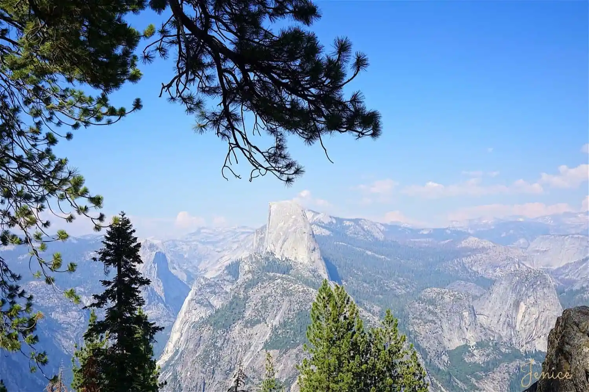
Glacier Point：俯瞰半圆顶和谷底
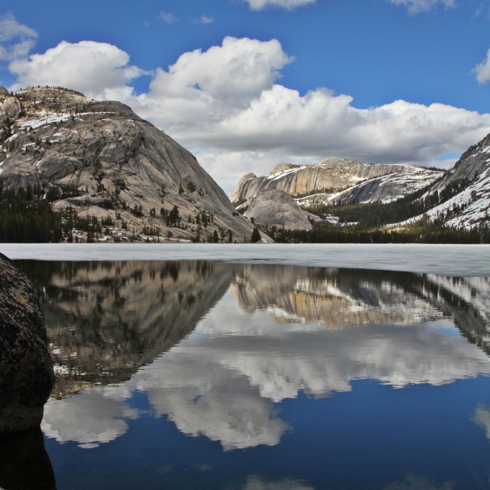
Tenaya Lake：Tioga Road 高山湖
09:00
开车上冰川点 Glacier Point（1h盘山），俯瞰半圆顶+整个谷底⏳ 10:30后停车场基本满，这天稍早出门
14:00
🚗 Tioga Road 东穿内华达山脉（2.5h含停留）Olmsted Point 看半圆顶背面、Tenaya 蓝宝石湖、Tuolumne 草甸，每处路边停15-30min
17:30
出东门下山：莫诺湖 South Tufa 日落石灰塔（400m平路）——百万年古湖+外星感石塔
19:30
宿 Mammoth Lakes（海拔2400m，凉爽好睡，餐厅多）
👟 步行：约1.5km🌡️ 高海拔 24/7°C⏳ 冰川点停车
③ 8/5 周三 · 395风景线南下 → 傍晚进死亡谷🚗 1.5h+2h ｜ 宿园内 Furnace Creek
路线US-395 南下，Lone Pine 补给后进死亡谷
住宿Furnace Creek 园内 The Ranch/Oasis
车程约3.5小时，不含各观景点停留
提醒进谷前加满油，每人备足 4L 水
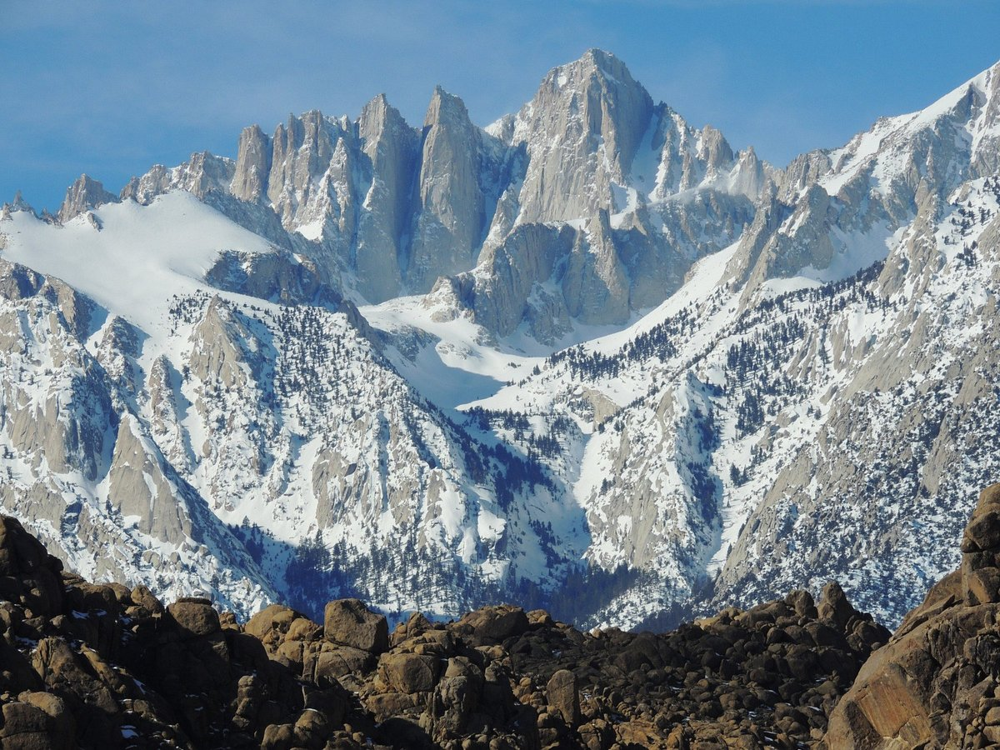
Alabama Hills：远眺惠特尼峰
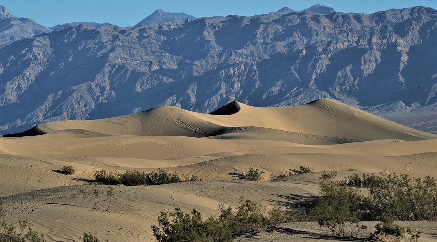
Mesquite Flat 沙丘：车边短停
10:00
🚗 US-395 南下 Lone Pine（1.5h）：Alabama Hills 电影小镇午餐，远眺惠特尼峰（美国本土最高点4421m）顺路加满油、每人备足4L水——进谷前最后补给
14:00
🚗 CA-190 东进死亡谷（2h，$30/车）Father Crowley 观景台、Mesquite 沙丘（均车边即达，正午高温每站≤10min）
16:30
入住园内 The Ranch/Oasis at Death Valley（8月是淡季，好订且便宜，泳池是泉水恒温）
19:30
🌄 Zabriskie Point 日落——金色恶地褶皱全程最出片（停车场走100m缓坡）
21:30
🌌 酒店门口抬头：死亡谷是金级暗夜公园，肉眼银河8月中旬还赶上英仙座流星雨前奏
👟 步行：每站≤10min🌡️ 谷底 47/31°C——严格车边活动⏳ 无
④ 8/6 周四 · 死亡谷早场 → 午后拉斯维加斯🚗 环谷1.5h + 2h ｜ 宿 Vegas Strip
路线死亡谷早场观景，午后经 Pahrump 去 Vegas
住宿Vegas Strip，下午直接休息避暑
车程环谷约1.5小时 + 出谷约2小时
提醒10点后只做车边点，盐滩不深入走
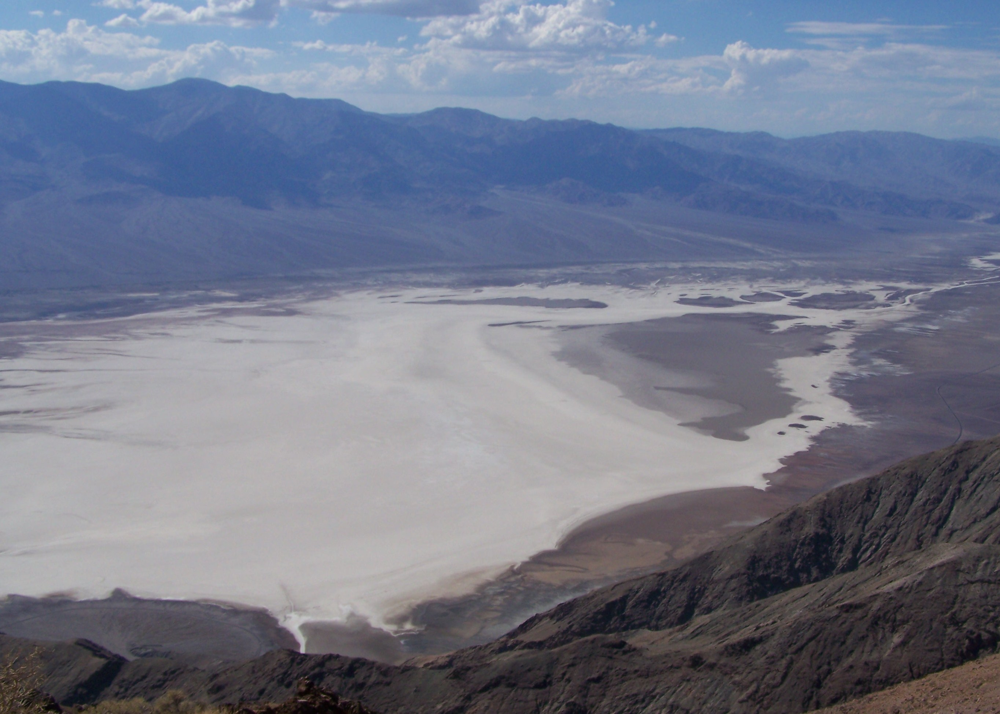
Badwater Basin：北美最低点盐滩
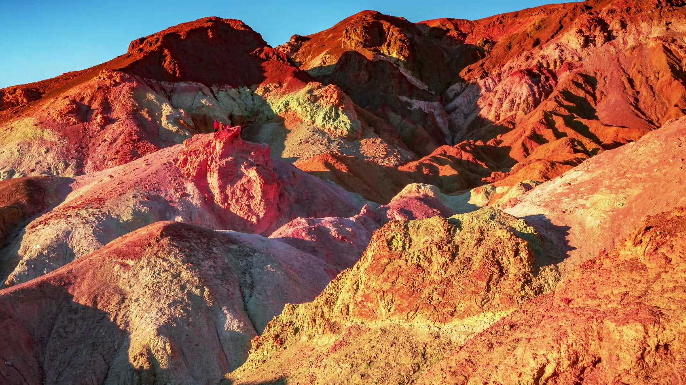
Artist's Palette：彩色矿物山丘
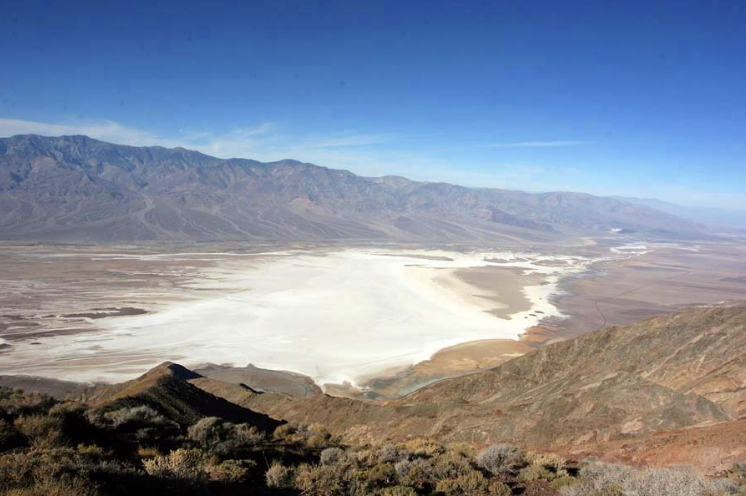
Dante's View：高处俯瞰盐滩
09:00
趁"凉"（~35°C）：Badwater 盆地——海平面下86m北美最低点，白色盐滩走5分钟
10:00
Artists Drive 调色盘彩丘单行环线（全程车内，Artist's Palette 下车拍照3分钟）
11:00
Dante's View 但丁观景台（海拔1670m，比谷底凉12°C）——刚才走过的盐滩此刻在1.6km脚下
12:00
🚗 出谷经 Pahrump → Vegas（2h），途中午餐
14:30
入住 Strip 酒店，午后泳池/小憩避暑
19:00
百乐宫音乐喷泉 + Strip 夜游一天之内：最高观景点→北美最低点→赌城霓虹，反差感是这条线的高潮
👟 步行：车边级 + Strip闲逛🌡️ 谷底早晨35°C → Vegas 41°C（夜间活动）⏳ 酒店check-in
8/7 周五 · Vegas 弹性日（三选一）🚗 0–4h ｜ 宿 Vegas
路线默认胡佛水坝半日 + Strip 室内休整
住宿继续住 Vegas，不换酒店最省力
车程不出城为0；胡佛水坝往返约1.5小时
预订O秀/魔术等晚间演出提前买票
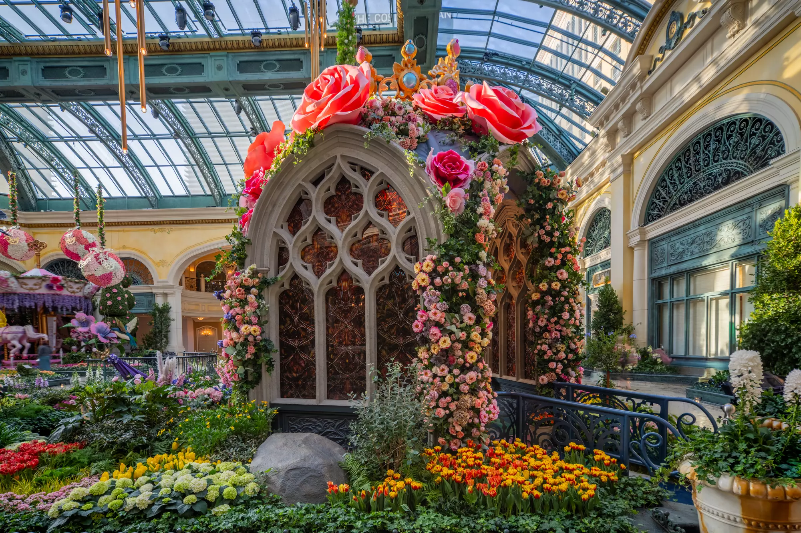
Bellagio Conservatory：白天室内避暑
A
🏗️ 半日胡佛水坝（45min车程）：坝顶+室内发电机组导览，午后回酒店休息，晚上 O秀/大卫·科波菲尔魔术（提前购票）
B
😴 全休整日：睡到自然醒，百乐宫植物园+威尼斯人室内运河，奥特莱斯，泳池
C
🏞️ 实在想要大峡谷：西缘 Skywalk 玻璃桥一日游（单程2h，~$70/人）景观比南缘打七折，仅作打卡选项
👟 步行：随意🌡️ 41/29°C，白天室内为主⏳ 秀票提前买
8/8 周六 · 赌城室内日 → 回纽约✈️ LAS→JFK 约5h
路线上午室内闲逛，下午机场还车
航班LAS → JFK 约5小时；8/9早班会更舒服
车程Strip 到机场通常15-25分钟，留足还车时间
提醒还车时检查异地还车费和油量账单
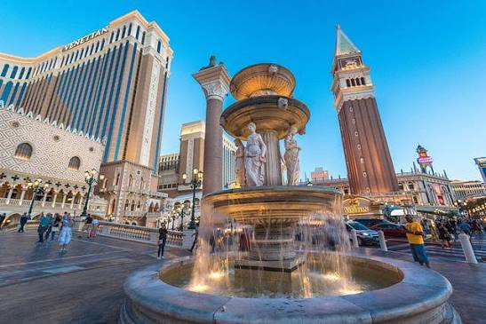
Strip 白天版：短距离室内外切换
17:30
✈️ 傍晚班直飞JFK（约5h，落地凌晨1点半）💡 爸妈不爱红眼→改 8/9 早班机最舒服：8/8晚看个秀好好睡，8/9傍晚到家
👟 步行：随意🌡️ 全天室内⏳ 安检预留2h
🧳 实用贴士（针对爸妈中国护照 + 你不开车）
💳 门票这样买方案E：到优胜美地大门买一张 $250「非居民版America the Beautiful年票」登记在爸爸名下——覆盖持卡人+同车3名成人的门票和$100/人附加费，连死亡谷$30也包了（散买$265，年票更省）。方案D不用买年票：火山湖/雷尼尔$30/车单买，红杉公园干脆免费。
🚗 租车爸爸主驾：护照+中国驾照+国际驾照(IDP)+本人信用卡。建议直接买全险（LDW+补充责任险）。妈妈若也有驾照可加为第二驾驶员，长途日轮换更安全。两案都是异地还车（E在Vegas还、D在西雅图还），单程费各家差很大（$0-500），订前把 Hertz/Avis/Enterprise 都比一遍。
📆 现在就要订的（按紧急度）定了E：① 优胜美地谷内 Yosemite Valley Lodge / El Portal（全行程最难订，今天就下手）② 死亡谷园内 The Ranch/Oasis ③ Vegas 秀票（O秀/魔术）④ 机票开口票：纽约→旧金山进、拉斯维加斯→纽约出（推荐8/9早班）。定了D：① Hellgate 快艇晚餐游 + 蒸汽小火车班次 ② Ashford 木屋（选择少）③ 7/23 纽约时间早10点抢 8/6 Multnomah $2 停车许可 ④ 开口票：西雅图→纽约出。
🔥 死亡谷8月安全守则（方案E必读）白天46-49°C：所有景点「车→观景台5-15分钟→回车」，10点后绝不走任何步道；每人备4L水；进谷前 Lone Pine 加满油、查胎压空调；谷内基本无手机信号，车抛锚留在车边等巡逻别步行求助；行程已把谷底项目排在早晚、正午在高处或车里。
🌦️ 8月其他天气雷点方案E：死亡谷偶有季风雷暴引发山洪，见乌云不进峡谷型路段；全程加州/内华达同一时区，无换表烦恼。方案D：加州北部/俄勒冈是山火季，出发前3天查 fire.airnow.gov 沿线AQI，若火山湖烟重可用「波特兰+圣海伦斯火山」替换那半天。
👴 节奏保护每天真正「游玩」只排2-3个点，午后热时段都在车里/酒店；所有步行都可中途折返；给爸妈备：遮阳帽、墨镜、大水壶、防晒霜，以及高海拔早晚（冰川点/莫诺湖/火山湖/雷尼尔）的薄外套。
政策来源：
NPS 非居民收费官方页 ·
Yosemite 2026 无需预约 ·
死亡谷夏季安全指南 ·
Mt. Rainier 2026 取消预约 ·
Crater Lake 2026 开放状况 ·
Multnomah 瀑布 $2 定时许可 ·
Hellgate 快艇 ·
雷尼尔蒸汽小火车 ·
哥伦比亚峡谷明轮船
· 生成日期 2026-07-12，出行前请复核。图片来自 Wikimedia Commons。